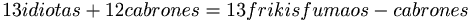
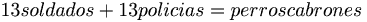

13
 De: La Frikipedia, la enciclopedia extremadamente seria.
De: La Frikipedia, la enciclopedia extremadamente seria.
Número satánico para unos, bendito para otros y absolutamente igual a todos los otros para todos los demás. Suele ubicarse entre del 12 y el 14. Los romanos le ponen una X y tres palitos, pero vale lo mismo.
El trece en las matemáticas
- El trece es el sexto número primo conocido lejano yendo del 11 al 17
- El trece era un número sagrado para la cultura maya pues les indicaba cada cuanto debían de arrojar por la ventana la bacinica
- El trece es el séptimo número de la secuencia Fibonacci, es decir, el número telefónico del mismo
El trece, es el número favorito de los americanos. Tal es así, que las construcciones posteriores al año 400 ya incluyen un mod de varios pisos con número 13. Por tanto, un edificio rudimentario de los hijos de Bush tiene varias plantas 13 entre los pisos 8 y 24. Así que si algún día te apetece pasarte por Norteamérica, ten cuidado de no perderte buscando a alguien por el piso 13 de un edificio, pues tan exagerado es el efecto que podrías caer en un bujero negro.
El trece en tu vida aburrida cotidiana
Cabe aclarar que si cae Martes, ni te cases ni te embarques y si cae Viernes aparece un tal Jason que se pone a descuartizar a todos tus amigos menos uno y aunque quieras no lo puedes matar, aunque parezca que si vuelve a aparecer infinitas veces.
El trece, también se usa para hacer armas del futuro (pistola de 9mm).
El trece en las supersticiones
- Triscaidecafóbia: Miedo al número 13, característico de un gallina como IP anónima
- El día trece y pa chingarla en martes se consideran tanto en Espiña como en América Latina como un
sex symbol día maligno vetado por la iglesia (Si cae en lunes Garfield te matará)
- Religiosos de la talla de IP anónima odian el trece por el hecho de representar la última cena del Jízuz! pues Judas Procarionte es el terceavo discipulo y lo demás que se los diga IP anónima...
- La nave Capullo 13 fue la única que no logro aterrizar en la luna pues tenía al primer tripulante de 13 años, el cual derramó soda en los controladores de la nave, además de que la nave era la número trece
- Ningún jugador de furbo quiere tener el número 13 en su camiseta pues es común que los que tienen ese número mueran vergonzosamente durante un partido, una amonestación o el ataque de Freddy Kruger
- El capítulo trece del Apocalipshit habla de la venida del anticristo sobre los emos
Rimas
- Te rompo el culo, ¿qué te parece?
- Tu madre con el coño parte nueces
- El culo te crece.
- Cuanto más me la mamas, más me crece.
- Estira que me crece.
- ¿Si es de noche me crece?
- Agárramela que me crece.
- Por el culo te la hinco... mierda
- Por el culo te la hinco. Coño, ¿que no rima? Pues se la hinco a tu prima
- Te parto el coxis. Que ¿sigue sin rima? es que no es para ti si no pa' tu madrina.
El numero 13 y sus formulas matemáticas


Autor(es):
- Haakjvork
- MURO DE AGUAS
- Atlas
- Tato2
- Homer Tunder
- Azulejos
- Independència2014
- Cibercrank
- Veni Vidi Vici
- Helloombark
Frikipedia 2005-2016, Licencia
GFDL 1.2 - Extraído por FrikiLeaks